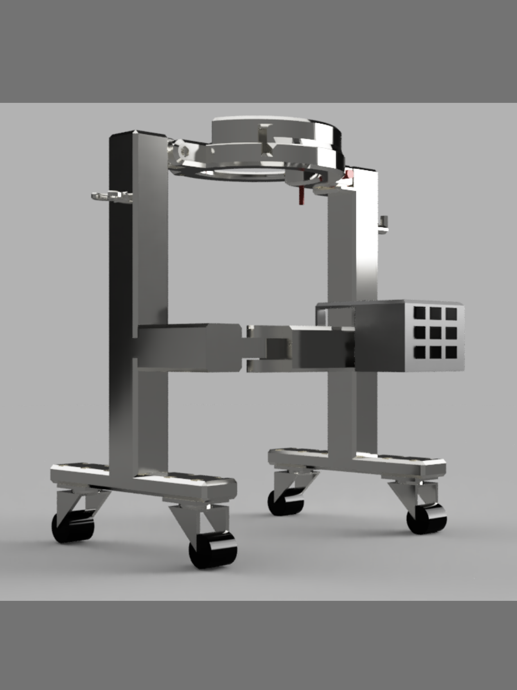

The 8080Walker is a multi-functional mobility aid for
elderly users, offering guidance, support, and training
capabilities to enhance daily movement and well-being.

The walkers in the market are all relatively compact and
thus, have no space for storage spaces. However, the
8080Walker has storage mediums (cane holder, basket, hook),
and can still be compact.

The hip brace is adjustable to all users with different hip
widths.

The 8080Walker is designed to be able to be taken apart and
foldable quickly and easily for portability and space
efficiency.

Other walkers in the market only have wheels going in one
direction or 6+ wheels going in multiple directions. The use
of universal wheels reduces the materials used.
8080Walker Project Demo Video

This is the 8080Walker's poster, informing our schoolmates about our new design!